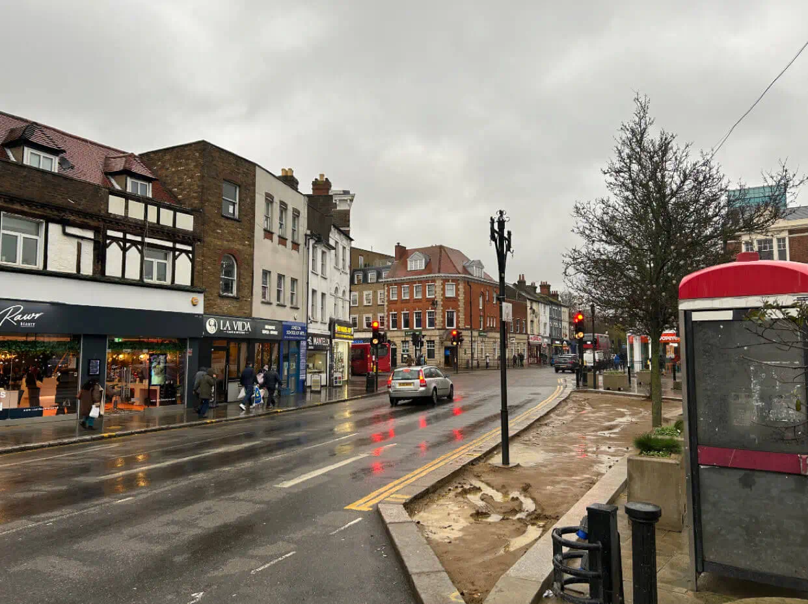

All concrete base installations are carried out across Enfield and selected surrounding residential areas.
If your location isn’t listed, it may still be covered. Nearby areas are often included depending on access and scheduling.
From experience and local area knowledge we know Enfield properties can vary widely, which is why coverage isn’t treated as a one-size-fits-all approach. Different property types in the area have different access points, homeowners in Enfield could live as little 10 minutes away from each other but require completely different planning.
Most enquiries come from homeowners with:
These layouts are common across Enfield, and are factored in when planning how your project can be served efficiently.
If you're not sure about what type of access is viable because you're not familiar with trade work thats fine, as long as you can describe your location & access, we can confirm.